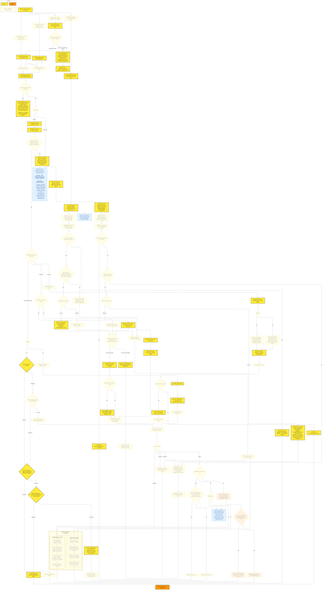

High Level Process Flow
Narrative Steps
-
Purchase Channel Selection (WF-001) – Customer selects where they purchased:
- Silk & Snow Online – CA (WF-002) – WooCommerce online orders
- Silk & Snow Online – US (WF-094) – WooCommerce online orders
- Silk & Snow Retail Store (WF-003) – In-person purchase
- Third-Party Vendor (WF-004) – TSC, EQ3, or Costco
Retail Store Backend Handling (WF-018 → WF-022)
For Retail Store selections, the portal performs a store lookup (WF-019) to determine whether the store backend is Shopify POS or STORIS (non-Shopify):
- If Shopify POS store: Routes customer into the same order flow as online orders (Shopify Online + Shopify POS orders).
- If STORIS (non-Shopify) store: Displays message (WF-021): "This return cannot be processed through this portal. Please call the Sleep Country Customer Service team for further instructions." Flow ends (WF-022).
-
Customer Intent Selection (WF-023/096) – Customer chooses the type of assistance needed:
- Return (WF-024/097)
- Warranty claim (WF-025/098)
The flow branches accordingly into either the Return or Warranty workflow.
-
Order Lookup & Validation (WF-026/099/042 → WF-028/101/044)
Customer enters order number and email (WF-026/099/042). The system validates against WooCommerce records (WF-027/100/043).
Validation Outcomes:
- Success: Proceed to display order items
- Failure (WF-028/101/044): Display error message with retry option:
- "For orders purchased in store, an email may not have been provided."
- Alternative: Allow retry with Order Number + Phone Number instead of email
- Option to contact support if validation continues to fail
-
Display Order Items & Eligibility (WF-029/102)
All items in the order are displayed with variant image, color, category, and eligibility status. Eligibility is computed using:
- Product category
- Return window
- Trial length
- Final sale rules
- Purchase channel
- Delivered date
-
Item Selection (WF-030/103)
Customer selects one or more eligible items to return. Minimum of one item required.
[!WARNING] Bundle / Free Item Promotion (Future Phase): If the item is part of a bundle or free item promotion, the customer can keep bundled/free items at 50% of full website price; the refund is adjusted accordingly.
Technical Implementation Note: Due to WooCommerce core limitations regarding bundle structures, this step requires custom logic to correctly identify bundled items and apply the 50% proration logic. Standard Claimlane/WooCommerce plugins do not support this out-of-the-box.
-
Reason Selection (WF-038/105)
Customer chooses a return reason for each selected item. Reasons map to WooCommerce refund categories.
Defective Routing Logic:
- If customer selects "Defective" as reason AND does not opt out of product replacement → Automatically redirect to Warranty claim workflow (bypasses standard return logistics)
-
Documentation Upload
For damage claims, defective items, and certain return types, customers must upload required documentation:
- Photos of damage/defect
- Law tags (for mattresses)
- Measurements (if applicable)
- Receipt (for third-party claims)
Flow Split: Returns vs. Warranty vs. Third-Party
At this point, the workflow branches into three distinct paths based on the claim type:
A. RETURN FLOW (WF-038/105 onward)
8. Product Type Routing (WF-038/105)
The return flow splits based on item type and region:
8A. Mattress Returns
Boxed Mattresses (WF-039 → WF-062A → WF-077A):
- Customer confirms mattress is boxed (WF-039)
- Collect photos and law tag (WF-061A)
- Provide return label and drop-off instructions (WF-062A)
- Customer ships item
- Vendor picks up item; Status is auto-updated to "Picked" via Courier API (WF-064/063A)
Unboxed Mattresses (WF-039 → WF-064A → WF-059/065A):
- Customer confirms mattress is unboxed (WF-039)
- Collect photos, law tag, and condition details (WF-064A)
- Route to Return Logistics Team (WF-059/065A) for vendor selection
- See Return Logistics Management section below
8B. Furniture Returns (WF-040)
CA Furniture (WF-040 → WF-137):
- Customer uploads photos and issue details (WF-069A)
- ClaimLane calls WooCommerce API for carrier quotes (WF-137)
- Destination: Always Caledonia warehouse (CA)
- Notify customer of shipping charges (WF-073A)
- Note: For disposal pickups, the charge displayed is equal to the courier pickup charge (business decision to standardize costs).
- Customer Accepts Charges & Submits Ticket (WF-074A):
- Customer provides pickup details / access constraints
- Customer agrees to shipping costs
- Ticket created in CX Review Queue
- CX Review & Approval (WF-070A → WF-071A):
- CX reviews photos and eligibility
- If declined (WF-072A): Communicate decision to customer → End
- If approved:
- System auto-generates label and pickup instructions
- Charge is finalized/processed
- Item marked as "Received" (WF-089) once picked up
US Furniture (WF-040 → WF-138):
- Same process as CA furniture, except:
- Destination: Original order shipping warehouse (LA or NJ) (WF-138)
8C. Accessory & Bedding Returns
CA Accessories (Opened or Unopened) (WF-041):
- Collect return reason and photos (WF-076A)
- Provide mail-in return label and instructions (WF-077A)
- Customer ships item (WF-078A)
- Item marked as "Received" (WF-089)
US Accessories - Unopened (WF-115 → WF-116):
- System checks if item is opened (WF-115)
- For unopened items, calculate shipping cost (WF-116)
- Shipping Cost Decision:
- If cost < 1/3 item value: Generate return label (WF-111) → Customer ships
- If cost > 1/3 item value: Skip label, present Option 1 (see below)
US Accessories - Opened (WF-115 → WF-117):
- System detects item is opened (WF-115)
- Present Option 1 (WF-117): "Keep item for 50% refund (no proof required)"
- If accepted (WF-118): Process 50% refund → End
- If rejected: Present Option 2
- Present Option 2 (WF-119): "Donate item for 100% refund (proof required)"
- If accepted (WF-120): Customer donates item, takes photo, contacts CX via call/email → CX processes return in portal (WF-121) → End
- If rejected: Return declined (WF-109) → End
9. Return Logistics Management (WF-059/065A → WF-064/063A)
For unboxed mattresses, oversized items, and items requiring disposal pickup, the Return Logistics Team manages vendor coordination:
- Vendor Selection (WF-059/065A):
- Return Logistics Manager manually selects a donation or pickup vendor
- Photos are NOT sent to vendors for unboxed mattresses
- Vendor Assignment Outcomes:
- Vendor Selected: Trigger emails to vendor and customer (WF-061/066)
- No Vendor Available (Self-Donation): Manger selects "Self-Donation" (WF-130)
- Vendor Change Management (WF-062/067A):
- If vendor needs to be changed (WF-062/067A → WF-063/068A):
- Select new vendor
- Trigger updated email notifications to new vendor and customer
- If vendor needs to be changed (WF-062/067A → WF-063/068A):
- Pickup Confirmation (WF-064/063A):
- Vendor picks up item; Status is auto-updated to "Picked" via Courier API
- Self-Donation Flow (WF-130 → WF-132):
- When "Self-Donation" is selected:
- Customer receives specific email instructions
- Customer donates item themselves and takes photo as proof
- Customer contacts CX Team (call or email)
- CX manually processes return in ClaimLane portal (WF-132)
- When "Self-Donation" is selected:
B. WARRANTY CLAIM FLOW (WF-052 → WF-058)
10. Warranty Claim Processing
10A. Item & Replacement Part Selection (WF-052 → WF-053)
-
Display Order Items with Replacement Parts (WF-052):
- System displays all items in the order
- Replacement parts shown with product context
[!NOTE] Example – Nara Wooden Dresser (5-Drawer, Cortado)
Parent SKU: SNSFNDR5005T - Drawer – Top Left | SNSFNDR5005TDRSL - Drawer – Top Right | SNSFNDR5005TDRSR - Drawer – Large | SNSFNDR5005TDRB - Screw | SNSFNS5000TSW - Stain & Brush | SNSFNWO5000ACST - Stain & Brush | SNSFNS5000TST
-
Customer Selects Item or Replacement Part (WF-053):
- Customer chooses the defective product or specific sub-part (e.g., drawer, screw)
10B. Documentation & Submission (WF-054 → WF-055)
- Collect Additional Information (WF-054):
- Issue description
- Photos of defect
- Pickup assistance needed (Yes/No)
- Address confirmation
- Submit Warranty Case (WF-055):
- Case submitted to ClaimLane with selected part SKUs, evidence, and notes
10C. CX Review & Approval (WF-052B → WF-052D)
- CX Reviews Submission (WF-052B):
- CX team validates photos and part selection
- CX Approval Decision (WF-052C):
- Declined (WF-052D): Communicate decline and next steps to customer → End
- Approved: Proceed to pickup logic
10D. Pickup Assistance (WF-052F → WF-052I)
- Pickup Assistance Check (WF-052F):
- Does customer need pickup assistance?
- No: Skip to replacement order placement (WF-056)
- Yes: Proceed to pickup type selection
- Does customer need pickup assistance?
- Pickup Type Selection (WF-052H):
- Courier Pickup (WF-052G):
- CX provides pickup assistance (coordination + guidance)
- Generate return label with "Defective" wording (helps warehouse avoid inspection)
- Disposal Pickup (WF-052I):
- Log case for Return Logistics Team (routes to WF-059/065A vendor selection)
- Courier Pickup (WF-052G):
10E. Replacement Order & Closure (WF-056 → WF-058)
- CX Places Replacement Order (WF-056):
- CX creates replacement order in WooCommerce using approved replacement part SKUs
- Close Case (WF-058):
- Case marked complete after replacement order is placed
C. THIRD-PARTY VENDOR FLOW (WF-004 → WF-017)
[!CAUTION] DEFERRED TO PHASE 2: The entire third-party vendor flow (TSC, EQ3, Costco) has been moved to Phase 2 backlog. The existing Claimlane architecture lacks the logic necessary to support these workflows. Implementing this feature would require a fundamental rebuild of core processes. See
15-phase-2-backlog.mdfor complete details.
11. Third-Party Vendor Returns (TSC, EQ3, Costco)
For items purchased from third-party vendors, the workflow requires vendor approval and coordination:
11A. Vendor Selection & Evidence (WF-005 → WF-007)
- Select Third-Party Vendor (WF-005):
- Customer chooses vendor: TSC, EQ3, or Costco
-
Collect Required Evidence (WF-006):
- Receipt
- Photos
- Law tags
- Other vendor-specific documentation
[!NOTE] WF-017: Exact evidence requirements to be confirmed per vendor (TSC/EQ3).
-
Log Action Item (WF-007):
- Create ticket in ClaimLane: "Third-party vendor review required"
11B. Vendor Notification & Approval (WF-008 → WF-010)
- Send Vendor Email Notification (WF-008):
- System automatically emails vendor with ticket details
- Vendor Approval Decision (WF-009):
- Vendor Declines (WF-010):
- Communicate vendor decision and next steps to customer → End (WF-060)
- Vendor Approves:
- Proceed to pickup assistance check
- Vendor Declines (WF-010):
11C. Pickup Assistance (WF-011 → WF-011B)
- Pickup Assistance Check (WF-011):
- Does customer need pickup assistance or defective item removal?
- No (WF-013): Customer proceeds with vendor's own instructions (no CX coordination)
- Yes (WF-011A): Determine pickup type
- Does customer need pickup assistance or defective item removal?
- Pickup Type Selection (WF-011A):
- Courier Pickup (WF-012):
- CX provides pickup assistance (coordination + guidance)
- Generate return label
- Disposal Pickup (WF-011B):
- Log for Return Logistics Team (routes to WF-059/065A)
- Courier Pickup (WF-012):
11D. Confirmation & Processing (WF-014 → WF-016)
- Pickup Confirmed/Scheduled (WF-014):
- Pickup arranged and confirmed with customer
- Item Received (WF-015):
- Confirm receipt of returned item
- Vendor Refund Notification (WF-016):
- Email vendor: "Proceed with return / refund"
- If item routed to Caledonia, warehouse team updates status (WF-090 → WF-093)
- Case closed (WF-060)
D. SHARED BACKEND PROCESSES
12. Ticket Creation
The ClaimLane ticket stores all claim details: - Customer information - Selected items and SKUs - Return/warranty reason - Uploaded documentation - Pickup/shipping details - Vendor assignments (if applicable)
Duplicate Prevention: System prevents duplicate ticket creation for the same order and items.
13. Refund Processing (WF-066B → WF-074)
Once an item is marked as "Received" (WF-089), the refund logic is determined by order value, bundle status, and phase:
Phase 1 Refund Logic (Current State)
Automatic Refund Eligibility (WF-067 → WF-068):
-
Conditions: Net refund value < $600 AND order contains NO bundles or free items
-
Action: Auto-initiate refund (if payment gateway supported)
Manual Refund Triggers (WF-067 → WF-069):
-
Conditions: Net refund value ≥ $600 OR order contains bundles/free items
-
Action: Route to CX for manual processing
[!WARNING] WF-074 Technical Limitation: We cannot implement auto-refunds when bundles or free items are involved until we fix WooCommerce, which is currently restricting ClaimLane's data access to bundle structures.
Future Phase Refund Logic (Future State)
Bundle Impact Calculation (WF-070):
- System calculates bundle impacts and adjusted refundable amounts
- Accounts for 50% proration of bundled/free items customer keeps
Auto-Refund After Bundle Calculation (WF-071 → WF-072):
- If post-bundle calculation value < $600: Auto-refund
Manual Refund After Bundle Calculation (WF-071 → WF-073):
- If post-bundle calculation value ≥ $600: Manual CX processing
14. Warehouse Processing & Inventory Reconciliation
CA Warehouse (Caledonia) – Direct Portal Access (WF-090 → WF-093)
- Return Delivered to Caledonia (WF-090)
- Caledonia Team Updates Status (WF-091):
- Team has limited-access portal role
- Updates status directly in ClaimLane portal (WF-092)
- Status transition: Delivered → Processing → Inspection Completed
- Store Ops Inventory Update (WF-093):
- Store Ops team runs "Returned items" report from portal
- Report used to update inventory and reconcile returned goods
US Warehouse (LA / NJ) – Offline Email-Based Process (WF-133 → WF-136)
- Return Delivered to US Warehouse (WF-133)
- Item arrives at Los Angeles or New Jersey warehouse
- US Warehouse Emails Status (WF-134):
- US warehouse team has NO direct portal access
- Team emails return status updates to Internal Ops team (offline to ClaimLane)
- Internal Ops Updates Portal (WF-135):
- Internal Ops team manually updates ClaimLane portal
- Status transition: Delivered → Processing → Inspection Completed
- Internal Ops Inventory Update (WF-136):
- Internal Ops runs "Returned items" report
- Report used for US inventory reconciliation
[!IMPORTANT] Key Difference: US warehouse teams operate completely offline from the ClaimLane portal. All status updates require Internal Ops intermediary via email communication.
Visual Process Flow
